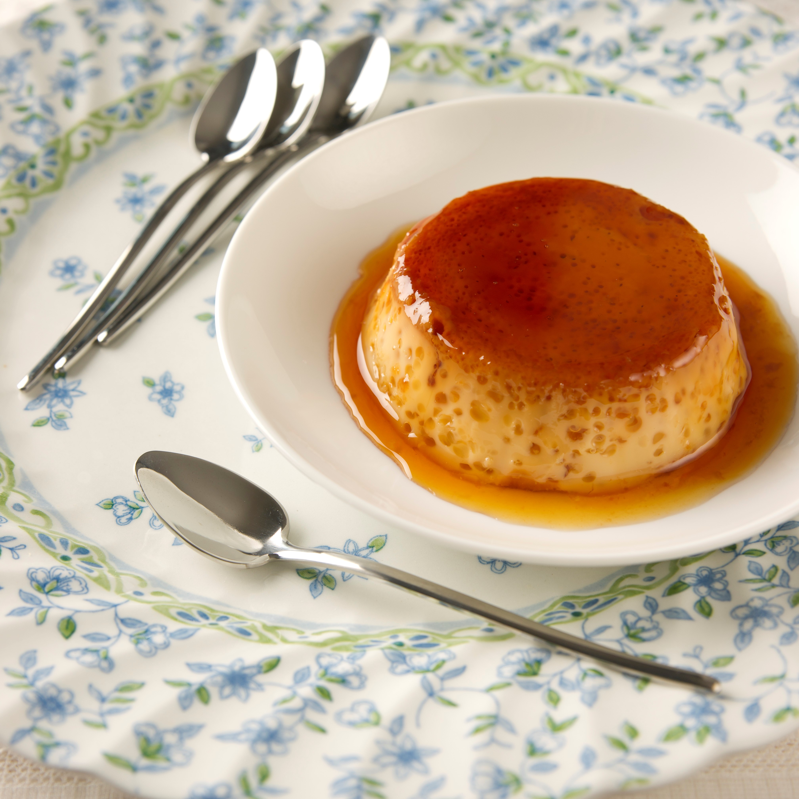

---Cómo hacer un flan---

Ingredientes:
- 1 lata de leche condensada (397 g)
- 1 lata de leche evaporada (410 g)
- 4 huevos grandes
- 1 cucharadita de esencia de vainilla
- 1 taza de azúcar (para el caramelo)
Preparación:
- Precalienta el horno a 180°C (350°F).
- Para hacer el caramelo, coloca el azúcar en una sartén a fuego medio.
Deja que se derrita sin revolver demasiado.Cuando el azúcar se haya disuelto y
tenga un color dorado, retira del fuego y vierte el caramelo caliente en el
fondo de un molde para flan. Extiende el caramelo por todo el fondo del molde
y un poco por los lados.
- En un tazón grande, mezcla la leche condensada, la leche evaporada, los huevos
y la esencia de vainilla. Bate bien hasta que todos los ingredientes estén
completamente incorporados.
- Vierte la mezcla de flan en el molde preparado con el caramelo.
- Coloca el molde de flan dentro de una bandeja para hornear más grande y
llénala con agua caliente hasta que llegue a la mitad de altura del
del flan. Esto creará un baño María para hornear el flan.
- Hornea el flan en el horno precalentado durante aproximadamente 45-50 minutos,
o hasta que esté firme en los bordes pero aún un poco tembloroso en el centro.
- Retira el flan del horno y deja que se enfríe a temperatura ambiente. Luego,
refrigéralo durante al menos 4 horas o preferiblemente toda la noche.
- Para servir, pasa un cuchillo por los bordes del flan para desprenderlo del
molde. Coloca un plato grande boca abajo sobre el molde y dale la vuelta
rápidamente para que el flan caiga sobre el plato con el caramelo en la parte
superior.